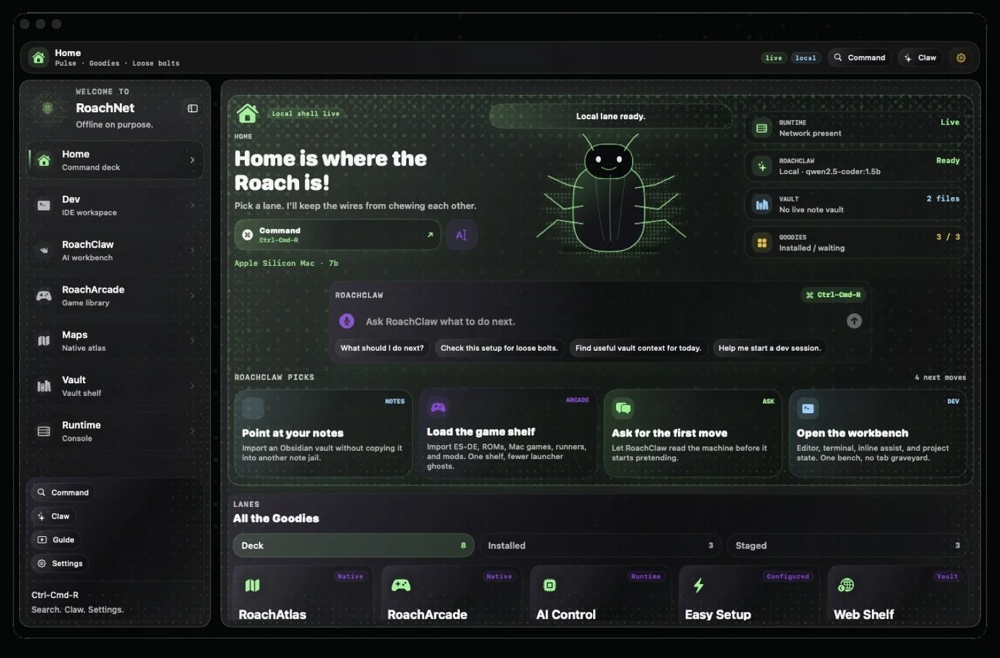

Local AI
Real models, running on your own Mac. No API keys, no monthly meter, no asking anyone's permission.
Now your work lives in a dozen tabs, three different logins, and however many dashboards decided to redesign themselves this quarter. Your setup stopped feeling like a system and started feeling like a pile.
And yet, for the work that actually matters, you still crave something simple:
A machine that’s yours. Tools that don’t move. A setup that keeps working, even when the internet doesn’t.That’s where RoachNet comes in.
Meet RoachNet — an offline-first suite for AI, archiving, and development that actually lives on your machines.
RoachNet treats your computer like a computer again. Your models, your tools, and your files run right here, sync when you say so, and refuse to vanish because a login expired or a product manager got bored.
Instead of asking “which service holds this?”, you always know: it’s in RoachNet.

Start local AI with RoachClaw. Keep the web pages, docs, and projects you care about somewhere they’ll still be in five years. Write code in a setup that looks identical on your desktop, your laptop, and that machine in the closet.
Real models, running on your own Mac. No API keys, no monthly meter, no asking anyone's permission.
Park the pages, docs, playlists, and projects you care about somewhere they'll still be in five years.
The same setup on your desktop, your laptop, and that machine in the closet. No browser required.
No surprise upgrades. No forced migrations. No "we've updated our terms" emails between you and your work.
Once you stop assuming everything has to be hosted elsewhere, your whole relationship with computing shifts.
RoachNet is built for that mindset. For people who like owning the tools they lean on, even if they still use plenty of cloud on top.
It's not nostalgia. It's a quieter, saner place to work — one where your AI, your archive, and your editor travel with you and answer to you.
Seven promises about how RoachNet is built. Each one is something you can check on your own Mac.
Your files, models, chats and settings live on your Mac, in folders you can open in Finder, back up or move. RoachNet collects no analytics. It goes online to fetch what you ask for, and to check GitHub for its own updates.
Downloaded models, the Vault, offline maps, saved archives and Dev Studio keep working with no internet at all. The network is for downloads and for the features you switch on.
Models run on your Mac’s own GPU with RoachNet’s engine, and agents in your Org work under the rules and approvals you set. A Claude or ChatGPT plan is an option you add with your own account, never a requirement.
What leaves your Mac is opt-in and labeled, like a RoachNet account, web chat, or RoachTail between your own devices. The RoachNet API asks anything other than RoachNet for a token, and its local servers refuse requests from web pages.
The model server speaks the Ollama, OpenAI and Anthropic APIs, so the tools you already use can point at it. Your files stay ordinary files: Markdown, PDFs, GGUF models, ZIM archives.
Feature packs add what you need and leave out what you don’t. Bring your own themes and agents, and build on the documented API.
RoachNet runs on the Mac you have. With RoachNet Cluster, your other Macs can share a model too big for one, over your own network, paired with a code only you hold.
If RoachNet ever falls short of one of these, that’s a bug. Tell us on GitHub.
You can keep clicking through other people’s platforms.
Or you can bring the important stuff home.
Press ⇧⌘R to download RoachNet and take your environment back.
Hit the shortcut and the macOS download starts. We’ll drop you at Home right after.
RoachNet v1.1.0 is not Apple-notarized; macOS may ask you to approve it on first launch.